Изготовление и применение магнитопластов (магнитоэластов)
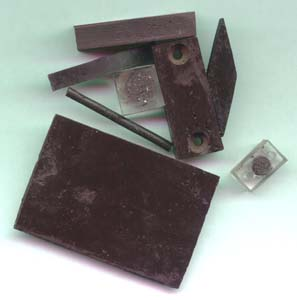
Введение
Магнитопласты - это полимерные постоянные магниты. Они изготавливаются из смеси магнитного порошка с магнитотвердыми свойствами, связующего полимера и различных добавок. В зависимости от физических свойств связующего полимера магнитопласты могут быть жесткими, пластичными (термопластичными) и эластичными (магнитоэласты). Преимуществами магнитопластов перед спеченными магнитами являются более простая, доступная, высокопроизводительная и дешевая технология изготовления, стойкость к коррозии и, соответственно, большой срок службы, возможность изготовления изделий сложной формы с высокой точностью (размеры с допусками по 3 - 4 классу) и со сложной конфигурацией магнитных полюсов.
Для изготовления магнитного порошка используются феррит бария (стронция), сплавы неодим-железо-бор, самарий-кобальт, алнико, их всевозможные смеси, а также другие материалы. В качестве связующего полимера могут применяться эпоксидные, фенольные и полиэфирные смолы, термопласты (на основе полиамида, поливинилхлорида, полистирола), эластомеры (винил, нитриловая резина, каучук). Содержание магнитного порошка в исходной смеси может достигать 76 % по объему или 94 % по массе. От состава магнитного порошка и его содержания в исходной смеси зависят магнитные характеристики получаемого магнитопласта.
При получении магнитопластов из исходной смеси могут использоваться технологии, применяемые для обработки пластмасс: литье под давлением, прессование, экструзия, каландрование.
Применение магнитопластов
Магнитопласты могут находить широкое применение в различных областях, в частности, заменяя собой спеченные магниты:
Опыты по изготовлению магнитопластов
Оборудование, использованное для изготовления магнитопластов:
Способ 1
В качестве исходного материала для изготовления магнитопластов использовался лом постоянных спеченных феррит-бариевых магнитов, предварительно размагниченный в установке для размагничивания [12] (рис. 12) и раздробленный. Отсеянная через сито с размерами ячеек 5 х 5 мм2 фракция подвергалась размолу в шаровой мельнице [14]. Дальнейший отсев производился через сито с размерами ячеек 0.5 х 0.5 мм2. Полученный порошок феррита бария (приблизительные свойства: коэрцитивная сила по намагниченности 190 кА/м, остаточная индукция 0.3 Тл) тщательно смешивался с эпоксидной смолой КДА с отвердителем и пластификатором. Массовое содержание феррита бария в исходной смеси удавалось доводить до 70 %. Затем смесь помещалась в заданную форму и подвергалась механическому одноосному напряжению (прессованию) с помощью пресса [9, 10]. В некоторых случаях пресс не использовался, а смесь просто набивалась в форму. Отвержение смолы производилось при температуре 20 ... 80 0C в течение четырех - шести часов (в зависимости от марки отвердителя) на воздухе или в печи [7]. В результате получался жесткий полимерный постоянный магнит с изотропными магнитными свойствами. Его намагничивание производилось в установке намагничивания [12] (рис. 8, 9) или с помощью специальных приспособлений для намагничивания [4] (рис. 10, 11). Благодаря изотропности магнитных свойств направление намагничивания и расположение магнитных полюсов может быть любым. В качестве исходного магнитотвердого материала могут применяться порошки феррита бария, феррита стронция, ЮНД, ЮНДК (ални, алнико), редкоземельных магнитов (РЗМ) (неодим-железо-бор, самарий-кобальт) и их смеси.
Способ 2
Исходный материал - смесь предварительно размагниченного лома магнитов из феррита бария, феррита стронция, ЮНД, ЮНДК (ални, алнико), РЗМ (неодим-железо-бор, самарий-кобальт). Примерное процентное содержание по массе: феррит ~ 60 %, алнико ~ 35 %, редкоземельные магниты ~ 5 %. Дальнейшая обработка такая же как и по первому способу, за исключением того, что отвержение эпоксидной смолы производилось в ориентирующем постоянном магнитном поле, направление которого соответствовало направлению осуществляемого впоследствии намагничивания полимерного магнита. Таким образом удавалось получить полимерные магниты с анизотропными магнитными свойствами. Их намагничивание производилось в установке намагничивания [12] (рис. 8). Направление намагничивания соответствовало направлению ориентирующего магнитного поля (такое же или противоположное). В качестве исходного материала могут применяться порошки феррита бария, феррита стронция, ЮНД, ЮНДК (ални, алнико), РЗМ (неодим-железо-бор, самарий-кобальт) и их смеси.
Способ 3
Исходный материал - смесь предварительно размагниченного лома магнитов из феррита бария, феррита стронция, ЮНД, ЮНДК (ални, алнико). Примерное содержание по массе: ферриты ~70 %, алнико ~30 %. Лом размельчался таким же образом, как и в первом способе. Полученный магнитотвердый порошок совместно с гранулами поливинилхлорида (соотношение по массе 4 : 1) засыпался в литьевую установку [5]. Далее смесь нагревалась примерно до 300 0C, тщательно перемешивалась мешалкой и выдавливалась в форму. Форма остужалась на воздухе или в воде, затем разбиралась, и из нее извлекался полученный магнит. Его намагничивание производилось в установке намагничивания [12] (рис. 8, 9) или с помощью специальных приспособлений для намагничивания [4] (рис. 10, 11). Благодаря изотропности магнитных свойств направление намагничивания и расположение магнитных полюсов может быть любым. В качестве исходного магнитотвердого материала могут применяться порошки феррита бария, феррита стронция, ЮНД, ЮНДК (ални, алнико) и их смеси.
Контроль магнитных свойств
Для контроля величины магнитной индукции на поверхности магнитопластов использовались различные тесламетры [11].
Образцы магнитопластов
Магнитопласты типоразмера П40 х 16 х 8, изготовленные по первому способу, применялись в качестве постоянных магнитов, работающих совместно с герконами в шлейфе охранной сигнализации [6] (см. рис. 1).
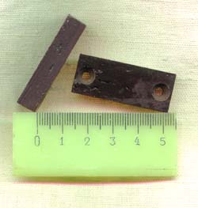
Рис. 1. Полимерные магниты для датчиков охранной сигнализации [6]. Массовый состав: феррит бария 70 %, эпоксидная смола 30 %. Направление намагничивания - вдоль длинной оси.
На рис. 2 показан полимерный магнит датчика приближения на магниточувствительной микросхеме. Для его изготовления смесь эпоксидной смолы и порошка феррита бария (массовое содержание порошка 60 - 70 %) набивалась в отверстие, просверленное в пластине из немагнитного материала (текстолит или оргстекло, толщина пластины 10 мм). При этом пластина одновременно использовалась и в качестве пресс-формы и в качестве конструктивного элемента для последующего крепления магнита на объекте. После отвержения смолы получался цилиндрический полимерный магнит типоразмера Д6 х 10, совмещенный с крепежным элементом.
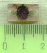
Рис. 2. Цилиндрический полимерный магнит для датчика приближения (вид сверху, направление намагничивания - вдоль оси цилиндра). Массовый состав: феррит бария 70 %, эпоксидная смола 30 %.
Для магнитного стикера был изготовлен магнит, показанный на рис. 3. Размер магнита 40 х 60 мм2, толщина 2 мм. Состав: эпоксидная смола, феррит-бариевый порошок (60 - 70 % по массе). Для изготовления использовалась соответствующая пресс-форма. Одностороннее многополюсное намагничивание (полюса в виде полос) осуществлялось в специальном намагничивающем устройстве [13] (рис. 9) или с помощью намагничивающего валика [4] (рис. 10, 11). Магнит хорошо притягивается к гладким стальным поверхностям: дверца холодильника, корпус системного блока компьютера и т. п.
Рис. 3. Полимерный магнит для магнитного стикера. Массовый состав: феррит бария 60 ... 70 %, эпоксидная смола 30 ... 40 %. Намагничивание многополюсное, магнитные полюса в виде параллельных полос.
Пример магнита более сложной формы (призма с основанием в виде ромба) приведен на рис. 4. Состав: эпоксидная смола (30 % по массе), смесь порошков феррита бария и алнико в примерном соотношении 2 : 1.
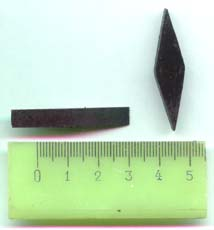
Рис. 4. Полимерный призматический магнит изотропного состава ромбовидной формы. Массовый состав: смесь феррита бария и алнико 70 %, эпоксидная смола 30 %. Размеры: большая диагональ ромба 40 мм, малая диагональ ромба 10 мм, высота призмы 6 мм. Направление намагничивания может быть любым: вдоль длинной или вдоль короткой диагонали ромба, по высоте призмы. Для улучшения магнитных свойств полимеризация может производиться в ориентирующем постоянном магнитном поле соответствующего направления.
Цилиндрический магнит аналогичного состава (эпоксидная смола 30 % по массе, остальное - смесь порошков феррита бария и алнико в примерном соотношении 2 : 1) с изотропными свойствами показан на рис. 5.
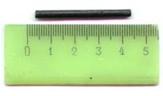
Рис. 5. Полимерный цилиндрический магнит с изотропными свойствами. Массовый состав: смесь феррита бария и алнико 70 %, эпоксидная смола 30 %. Размеры: длина 40 мм, диаметр 3 мм. Направление намагничивания по высоте или по диаметру цилиндра.
Цилиндрический магнит, полученный с помощью литья, представлен на рис. 6. Массовый состав - 80 % феррита бария, 20 % поливинилхлорида. Магнит обладает изотропными свойствами и может быть намагничен в любом направлении.
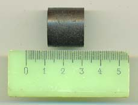
Рис. 6. Полимерный цилиндрический магнит с изотропными свойствами. Массовый состав: феррит бария 80 %, поливинилхлорид 20 %. Размеры: высота 20 мм, диаметр 22 мм. Направление намагничивания по высоте или по диаметру цилиндра.
Магнит на основе РЗМ (порошок неодим-железо-бор 80 % по массе, эпоксидная смола 20 %) можно видеть на рис. 7. Отвержение производилось без приложения ориентирующего магнитного поля, поэтому образец обладает изотропными свойствами и может быть намагничен в любом направлении.
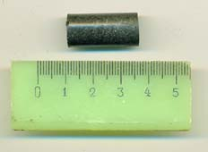
Рис. 7. Полимерный цилиндрический магнит с изотропными свойствами. Массовый состав: неодим-железо-бор 80 %, эпоксидная смола 20 %. Размеры: высота 26 мм, диаметр 12 мм. Направление намагничивания по высоте или по диаметру цилиндра.
Намагничивание магнитопластов
Для намагничивания магнитопластов могут применяться различные установки импульсного намагничивания [12] и магнитные системы для намагничивания постоянных магнитов [4]. Комплектация установки и конструкция намагничивающего устройства определяются составом магнитопласта и требуемой топологией магнитного поля.
На рис. 8 представлена установка для одноосного намагничивания магнитопластов любого состава в комплекте однополярным импульсным генератором [2] или емкостным накопителем энергии [3] и соленоидом. Размер зоны намагничивания: диаметр 35 мм, высота 60 мм.
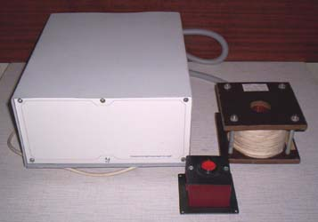 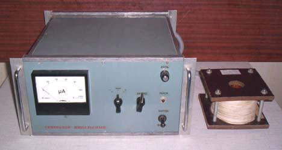
Рис. 8. Установка импульсного одноосного намагничивания магнитопластов любого состава.
Для одностороннего одноосного с переменной полярностью намагничивания магнитных стикеров использовалась установка, показанная на рис. 9, в комплекте с емкостным накопителем энергии [3] и специальным намагничивающим устройством [13].

Рис. 9. Установка импульсного многополюсного с переменной полярностью намагничивания магнитопластов на основе феррита бария.
Еще одним способом многополюсного намагничивания листовых магнитопластов является использование намагничивающего валика или аналогичных приспособлений [4] (рис. 10, 11).
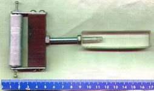
Рис. 10. Валик для многополюсного одностороннего намагничивания листовых магнитопластов толщиной до 3 мм с ферритовым наполнителем [4]. Ширина зоны намагничивания 50 мм за один проход.
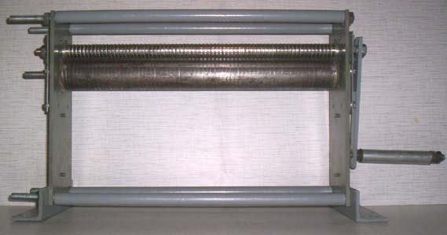
Рис. 11. Валки для непрерывного многополюсного одностороннего намагничивания листовых магнитопластов с ферритовым наполнителем шириной до 400 мм толщиной до 5 мм [4].
В некоторых случаях возникает задача размагничивания магнитопластов. Для этого может применяться установка, аналогичная показанной на рис. 12, в комплекте с биполярным импульсным генератором [1] и соленоидом.
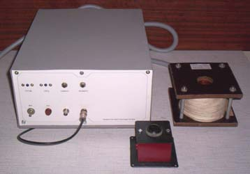
Рис. 12. Установка для размагничивания магнитного лома и магнитопластов любого состава. Размер зоны размагничивания: диаметр 35 мм, высота 60 мм.
Ссылки:
25.07.2006
29.09.2006
21.10.2006
06.03.2007
16.03.2007
23.07.2007
29.10.2009
26.02.2010
Альтернативные источники
энергии
Компьютеры и
Интернет
Магнитные поля
Механотронные системы
Перспективные
разработки
Электроника и
технология